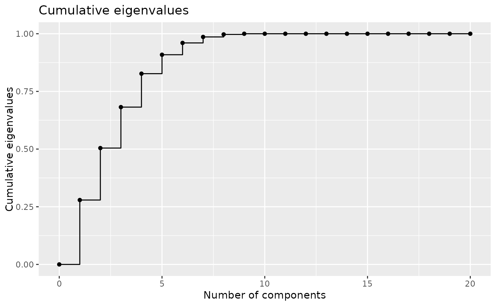

cfda provides functions for the analysis of categorical functional data.
The main contribution is the computation of an optimal encoding (real functional variable) of each state of the categorical functional data.
This can be done using the compute_optimal_encoding function that takes in arguments the data in a specific format and
a basis of functions created using the fda package (cf. create.basis). The output can be analyzed with plot.fmca,
get_encoding, plotEigenvalues and plotComponent.
Moreover, cfda contains functions to visualize and compute some statistics about categorical functional data.
A summary of the dataset is available with summary_cfd.
plotData shows a graphical representation of the dataset.
Basic statistics can be computed: the number of jumps (compute_number_jumps), the duration (compute_duration),
the time spent in each state (compute_time_spent), the probability to be in each state at any given time (estimate_pt),
the transition table (statetable).
The parameters of a Markov process can be estimated using estimate_Markov function.
In order to test the different functions, a real dataset is provided (biofam2) as well as two functions for generating data:
(generate_Markov and generate_2State).
Details
See the vignette for a detailled example and mathematical background:
RShowDoc("cfda", package = "cfda")
References
Deville J.C. (1982) Analyse de données chronologiques qualitatives : comment analyser des calendriers ?, Annales de l'INSEE, No 45, p. 45-104.
Deville J.C. et Saporta G. (1980) Analyse harmonique qualitative, DIDAY et al. (editors), Data Analysis and Informatics, North Holland, p. 375-389.
Saporta G. (1981) Méthodes exploratoires d'analyse de données temporelles, Cahiers du B.U.R.O, Université Pierre et Marie Curie, 37-38, Paris.
See also
Examples
# Simulate the Jukes-Cantor model of nucleotide replacement K <- 4 Tmax <- 6 PJK <- matrix(1/3, nrow = K, ncol = K) - diag(rep(1/3, K)) lambda_PJK <- c(1, 1, 1, 1) d_JK <- generate_Markov(n = 10, K = K, P = PJK, lambda = lambda_PJK, Tmax = Tmax) d_JK2 <- cut_data(d_JK, Tmax) # create basis object m <- 6 b <- create.bspline.basis(c(0, Tmax), nbasis = m, norder = 4) # compute encoding encoding <- compute_optimal_encoding(d_JK2, b, nCores = 1)#> ######### Compute encoding ######### #> Number of individuals: 10 #> Number of states: 4 #> Basis type: bspline #> Number of basis functions: 6 #> Number of cores: 1 #> ---- Compute V matrix: #> | | | 0% | |======= | 10% | |============== | 20% | |===================== | 30% | |============================ | 40% | |=================================== | 50% | |========================================== | 60% | |================================================= | 70% | |======================================================== | 80% | |=============================================================== | 90% | |======================================================================| 100% #> #> DONE in 0.58s #> ---- Compute F matrix: #> | | | 0% | |======= | 10% | |============== | 20% | |===================== | 30% | |============================ | 40% | |=================================== | 50% | |========================================== | 60% | |================================================= | 70% | |======================================================== | 80% | |=============================================================== | 90% | |======================================================================| 100% #> #> DONE in 3.42s #> ---- Compute encoding: DONE #> Run Time: 4.04s#> $x #> [1] 0.000 0.012 0.024 0.036 0.048 0.060 0.072 0.084 0.096 0.108 0.120 0.132 #> [13] 0.144 0.156 0.168 0.180 0.192 0.204 0.216 0.228 0.240 0.252 0.264 0.276 #> [25] 0.288 0.300 0.312 0.324 0.336 0.348 0.360 0.372 0.384 0.396 0.408 0.420 #> [37] 0.432 0.444 0.456 0.468 0.480 0.492 0.504 0.516 0.528 0.540 0.552 0.564 #> [49] 0.576 0.588 0.600 0.612 0.624 0.636 0.648 0.660 0.672 0.684 0.696 0.708 #> [61] 0.720 0.732 0.744 0.756 0.768 0.780 0.792 0.804 0.816 0.828 0.840 0.852 #> [73] 0.864 0.876 0.888 0.900 0.912 0.924 0.936 0.948 0.960 0.972 0.984 0.996 #> [85] 1.008 1.020 1.032 1.044 1.056 1.068 1.080 1.092 1.104 1.116 1.128 1.140 #> [97] 1.152 1.164 1.176 1.188 1.200 1.212 1.224 1.236 1.248 1.260 1.272 1.284 #> [109] 1.296 1.308 1.320 1.332 1.344 1.356 1.368 1.380 1.392 1.404 1.416 1.428 #> [121] 1.440 1.452 1.464 1.476 1.488 1.500 1.512 1.524 1.536 1.548 1.560 1.572 #> [133] 1.584 1.596 1.608 1.620 1.632 1.644 1.656 1.668 1.680 1.692 1.704 1.716 #> [145] 1.728 1.740 1.752 1.764 1.776 1.788 1.800 1.812 1.824 1.836 1.848 1.860 #> [157] 1.872 1.884 1.896 1.908 1.920 1.932 1.944 1.956 1.968 1.980 1.992 2.004 #> [169] 2.016 2.028 2.040 2.052 2.064 2.076 2.088 2.100 2.112 2.124 2.136 2.148 #> [181] 2.160 2.172 2.184 2.196 2.208 2.220 2.232 2.244 2.256 2.268 2.280 2.292 #> [193] 2.304 2.316 2.328 2.340 2.352 2.364 2.376 2.388 2.400 2.412 2.424 2.436 #> [205] 2.448 2.460 2.472 2.484 2.496 2.508 2.520 2.532 2.544 2.556 2.568 2.580 #> [217] 2.592 2.604 2.616 2.628 2.640 2.652 2.664 2.676 2.688 2.700 2.712 2.724 #> [229] 2.736 2.748 2.760 2.772 2.784 2.796 2.808 2.820 2.832 2.844 2.856 2.868 #> [241] 2.880 2.892 2.904 2.916 2.928 2.940 2.952 2.964 2.976 2.988 3.000 3.012 #> [253] 3.024 3.036 3.048 3.060 3.072 3.084 3.096 3.108 3.120 3.132 3.144 3.156 #> [265] 3.168 3.180 3.192 3.204 3.216 3.228 3.240 3.252 3.264 3.276 3.288 3.300 #> [277] 3.312 3.324 3.336 3.348 3.360 3.372 3.384 3.396 3.408 3.420 3.432 3.444 #> [289] 3.456 3.468 3.480 3.492 3.504 3.516 3.528 3.540 3.552 3.564 3.576 3.588 #> [301] 3.600 3.612 3.624 3.636 3.648 3.660 3.672 3.684 3.696 3.708 3.720 3.732 #> [313] 3.744 3.756 3.768 3.780 3.792 3.804 3.816 3.828 3.840 3.852 3.864 3.876 #> [325] 3.888 3.900 3.912 3.924 3.936 3.948 3.960 3.972 3.984 3.996 4.008 4.020 #> [337] 4.032 4.044 4.056 4.068 4.080 4.092 4.104 4.116 4.128 4.140 4.152 4.164 #> [349] 4.176 4.188 4.200 4.212 4.224 4.236 4.248 4.260 4.272 4.284 4.296 4.308 #> [361] 4.320 4.332 4.344 4.356 4.368 4.380 4.392 4.404 4.416 4.428 4.440 4.452 #> [373] 4.464 4.476 4.488 4.500 4.512 4.524 4.536 4.548 4.560 4.572 4.584 4.596 #> [385] 4.608 4.620 4.632 4.644 4.656 4.668 4.680 4.692 4.704 4.716 4.728 4.740 #> [397] 4.752 4.764 4.776 4.788 4.800 4.812 4.824 4.836 4.848 4.860 4.872 4.884 #> [409] 4.896 4.908 4.920 4.932 4.944 4.956 4.968 4.980 4.992 5.004 5.016 5.028 #> [421] 5.040 5.052 5.064 5.076 5.088 5.100 5.112 5.124 5.136 5.148 5.160 5.172 #> [433] 5.184 5.196 5.208 5.220 5.232 5.244 5.256 5.268 5.280 5.292 5.304 5.316 #> [445] 5.328 5.340 5.352 5.364 5.376 5.388 5.400 5.412 5.424 5.436 5.448 5.460 #> [457] 5.472 5.484 5.496 5.508 5.520 5.532 5.544 5.556 5.568 5.580 5.592 5.604 #> [469] 5.616 5.628 5.640 5.652 5.664 5.676 5.688 5.700 5.712 5.724 5.736 5.748 #> [481] 5.760 5.772 5.784 5.796 5.808 5.820 5.832 5.844 5.856 5.868 5.880 5.892 #> [493] 5.904 5.916 5.928 5.940 5.952 5.964 5.976 5.988 6.000 #> #> $y #> 1 2 3 4 #> [1,] -0.077840138 0.902215929 0.243554688 0.947235679 #> [2,] -0.084498676 0.871819429 0.249914305 0.938736000 #> [3,] -0.091050150 0.841931081 0.255996836 0.930372125 #> [4,] -0.097495312 0.812547075 0.261804815 0.922143080 #> [5,] -0.103834916 0.783663601 0.267340779 0.914047893 #> [6,] -0.110069714 0.755276849 0.272607262 0.906085589 #> [7,] -0.116200459 0.727383010 0.277606801 0.898255193 #> [8,] -0.122227904 0.699978273 0.282341932 0.890555733 #> [9,] -0.128152802 0.673058828 0.286815188 0.882986235 #> [10,] -0.133975905 0.646620866 0.291029107 0.875545724 #> [11,] -0.139697967 0.620660577 0.294986224 0.868233228 #> [12,] -0.145319740 0.595174151 0.298689074 0.861047771 #> [13,] -0.150841977 0.570157777 0.302140193 0.853988380 #> [14,] -0.156265431 0.545607647 0.305342116 0.847054082 #> [15,] -0.161590855 0.521519949 0.308297379 0.840243902 #> [16,] -0.166819001 0.497890875 0.311008518 0.833556867 #> [17,] -0.171950623 0.474716615 0.313478068 0.826992003 #> [18,] -0.176986472 0.451993357 0.315708565 0.820548336 #> [19,] -0.181927303 0.429717294 0.317702544 0.814224892 #> [20,] -0.186773867 0.407884614 0.319462541 0.808020698 #> [21,] -0.191526918 0.386491508 0.320991092 0.801934779 #> [22,] -0.196187209 0.365534165 0.322290731 0.795966162 #> [23,] -0.200755492 0.345008777 0.323363995 0.790113873 #> [24,] -0.205232519 0.324911533 0.324213419 0.784376937 #> [25,] -0.209619045 0.305238623 0.324841539 0.778754382 #> [26,] -0.213915821 0.285986237 0.325250890 0.773245234 #> [27,] -0.218123601 0.267150565 0.325444008 0.767848518 #> [28,] -0.222243138 0.248727799 0.325423428 0.762563260 #> [29,] -0.226275183 0.230714126 0.325191686 0.757388488 #> [30,] -0.230220491 0.213105739 0.324751318 0.752323227 #> [31,] -0.234079813 0.195898826 0.324104859 0.747366503 #> [32,] -0.237853903 0.179089579 0.323254844 0.742517342 #> [33,] -0.241543513 0.162674186 0.322203810 0.737774771 #> [34,] -0.245149397 0.146648838 0.320954291 0.733137815 #> [35,] -0.248672307 0.131009726 0.319508824 0.728605502 #> [36,] -0.252112996 0.115753039 0.317869944 0.724176856 #> [37,] -0.255472216 0.100874968 0.316040186 0.719850905 #> [38,] -0.258750721 0.086371702 0.314022087 0.715626675 #> [39,] -0.261949263 0.072239432 0.311818181 0.711503190 #> [40,] -0.265068596 0.058474347 0.309431004 0.707479479 #> [41,] -0.268109472 0.045072639 0.306863092 0.703554567 #> [42,] -0.271072643 0.032030496 0.304116980 0.699727479 #> [43,] -0.273958863 0.019344110 0.301195204 0.695997243 #> [44,] -0.276768885 0.007009670 0.298100300 0.692362885 #> [45,] -0.279503461 -0.004976634 0.294834803 0.688823430 #> [46,] -0.282163344 -0.016618611 0.291401248 0.685377904 #> [47,] -0.284749287 -0.027920072 0.287802171 0.682025335 #> [48,] -0.287262043 -0.038884827 0.284040108 0.678764748 #> [49,] -0.289702364 -0.049516684 0.280117595 0.675595169 #> [50,] -0.292071004 -0.059819455 0.276037166 0.672515624 #> [51,] -0.294368715 -0.069796949 0.271801358 0.669525140 #> [52,] -0.296596250 -0.079452975 0.267412706 0.666622743 #> [53,] -0.298754362 -0.088791345 0.262873745 0.663807459 #> [54,] -0.300843804 -0.097815867 0.258187012 0.661078314 #> [55,] -0.302865328 -0.106530352 0.253355041 0.658434334 #> [56,] -0.304819688 -0.114938609 0.248380368 0.655874546 #> [57,] -0.306707635 -0.123044449 0.243265529 0.653397975 #> [58,] -0.308529924 -0.130851681 0.238013060 0.651003648 #> [59,] -0.310287307 -0.138364116 0.232625496 0.648690591 #> [60,] -0.311980536 -0.145585562 0.227105372 0.646457831 #> [61,] -0.313610364 -0.152519831 0.221455224 0.644304392 #> [62,] -0.315177545 -0.159170731 0.215677588 0.642229302 #> [63,] -0.316682831 -0.165542073 0.209774999 0.640231587 #> [64,] -0.318126975 -0.171637667 0.203749993 0.638310272 #> [65,] -0.319510729 -0.177461322 0.197605106 0.636464385 #> [66,] -0.320834847 -0.183016849 0.191342872 0.634692950 #> [67,] -0.322100082 -0.188308057 0.184965828 0.632994995 #> [68,] -0.323307185 -0.193338757 0.178476509 0.631369545 #> [69,] -0.324456911 -0.198112757 0.171877450 0.629815627 #> [70,] -0.325550012 -0.202633869 0.165171188 0.628332267 #> [71,] -0.326587240 -0.206905901 0.158360258 0.626918491 #> [72,] -0.327569348 -0.210932665 0.151447195 0.625573325 #> [73,] -0.328497090 -0.214717969 0.144434534 0.624295795 #> [74,] -0.329371218 -0.218265624 0.137324813 0.623084928 #> [75,] -0.330192485 -0.221579439 0.130120565 0.621939749 #> [76,] -0.330961644 -0.224663224 0.122824327 0.620859286 #> [77,] -0.331679447 -0.227520790 0.115438634 0.619842563 #> [78,] -0.332346647 -0.230155947 0.107966022 0.618888607 #> [79,] -0.332963998 -0.232572503 0.100409026 0.617996445 #> [80,] -0.333532252 -0.234774269 0.092770182 0.617165102 #> [81,] -0.334052162 -0.236765055 0.085052025 0.616393605 #> [82,] -0.334524480 -0.238548671 0.077257092 0.615680980 #> [83,] -0.334949960 -0.240128926 0.069387917 0.615026253 #> [84,] -0.335329355 -0.241509631 0.061447036 0.614428450 #> [85,] -0.335663416 -0.242694596 0.053436985 0.613886597 #> [86,] -0.335952897 -0.243687630 0.045360299 0.613399721 #> [87,] -0.336198551 -0.244492543 0.037219514 0.612966847 #> [88,] -0.336401131 -0.245113145 0.029017165 0.612587003 #> [89,] -0.336561389 -0.245553246 0.020755789 0.612259213 #> [90,] -0.336680079 -0.245816657 0.012437920 0.611982505 #> [91,] -0.336757952 -0.245907186 0.004066094 0.611755904 #> [92,] -0.336795762 -0.245828643 -0.004357153 0.611578436 #> [93,] -0.336794262 -0.245584840 -0.012829286 0.611449129 #> [94,] -0.336754205 -0.245179585 -0.021347770 0.611367007 #> [95,] -0.336676343 -0.244616688 -0.029910067 0.611331097 #> [96,] -0.336561429 -0.243899959 -0.038513644 0.611340425 #> [97,] -0.336410216 -0.243033209 -0.047155965 0.611394018 #> [98,] -0.336223457 -0.242020247 -0.055834493 0.611490901 #> [99,] -0.336001904 -0.240864883 -0.064546693 0.611630101 #> [100,] -0.335746311 -0.239570926 -0.073290031 0.611810644 #> [101,] -0.335457431 -0.238142188 -0.082061969 0.612031556 #> [102,] -0.335136015 -0.236582477 -0.090859974 0.612291863 #> [103,] -0.334782817 -0.234895603 -0.099681508 0.612590591 #> [104,] -0.334398590 -0.233085377 -0.108524037 0.612926767 #> [105,] -0.333984087 -0.231155609 -0.117385025 0.613299417 #> [106,] -0.333540060 -0.229110107 -0.126261936 0.613707567 #> [107,] -0.333067262 -0.226952683 -0.135152235 0.614150242 #> [108,] -0.332566446 -0.224687146 -0.144053386 0.614626470 #> [109,] -0.332038365 -0.222317305 -0.152962854 0.615135277 #> [110,] -0.331483771 -0.219846972 -0.161878103 0.615675688 #> [111,] -0.330903418 -0.217279955 -0.170796598 0.616246729 #> [112,] -0.330298059 -0.214620065 -0.179715802 0.616847428 #> [113,] -0.329668445 -0.211871111 -0.188633181 0.617476810 #> [114,] -0.329015331 -0.209036904 -0.197546199 0.618133900 #> [115,] -0.328339468 -0.206121253 -0.206452320 0.618817727 #> [116,] -0.327641610 -0.203127968 -0.215349009 0.619527315 #> [117,] -0.326922509 -0.200060859 -0.224233730 0.620261690 #> [118,] -0.326182918 -0.196923736 -0.233103947 0.621019880 #> [119,] -0.325423591 -0.193720409 -0.241957126 0.621800909 #> [120,] -0.324645279 -0.190454688 -0.250790730 0.622603805 #> [121,] -0.323848736 -0.187130382 -0.259602224 0.623427594 #> [122,] -0.323034715 -0.183751302 -0.268389072 0.624271300 #> [123,] -0.322203967 -0.180321257 -0.277148739 0.625133952 #> [124,] -0.321357247 -0.176844058 -0.285878689 0.626014575 #> [125,] -0.320495307 -0.173323514 -0.294576387 0.626912194 #> [126,] -0.319618900 -0.169763435 -0.303239296 0.627825837 #> [127,] -0.318728778 -0.166167631 -0.311864883 0.628754530 #> [128,] -0.317825695 -0.162539912 -0.320450610 0.629697298 #> [129,] -0.316910403 -0.158884088 -0.328993942 0.630653167 #> [130,] -0.315983655 -0.155203968 -0.337492344 0.631621165 #> [131,] -0.315046204 -0.151503363 -0.345943281 0.632600317 #> [132,] -0.314098803 -0.147786083 -0.354344216 0.633589649 #> [133,] -0.313142204 -0.144055937 -0.362692614 0.634588188 #> [134,] -0.312177161 -0.140316735 -0.370985940 0.635594959 #> [135,] -0.311204426 -0.136572287 -0.379221657 0.636608989 #> [136,] -0.310224752 -0.132826403 -0.387397231 0.637629304 #> [137,] -0.309238891 -0.129082894 -0.395510126 0.638654930 #> [138,] -0.308247597 -0.125345568 -0.403557806 0.639684893 #> [139,] -0.307251623 -0.121618236 -0.411537736 0.640718220 #> [140,] -0.306251721 -0.117904707 -0.419447380 0.641753936 #> [141,] -0.305248644 -0.114208792 -0.427284202 0.642791068 #> [142,] -0.304243145 -0.110534301 -0.435045667 0.643828643 #> [143,] -0.303235977 -0.106885043 -0.442729240 0.644865685 #> [144,] -0.302227892 -0.103264828 -0.450332384 0.645901222 #> [145,] -0.301219644 -0.099677466 -0.457852565 0.646934279 #> [146,] -0.300211985 -0.096126767 -0.465287247 0.647963882 #> [147,] -0.299205668 -0.092616541 -0.472633893 0.648989059 #> [148,] -0.298201446 -0.089150598 -0.479889970 0.650008835 #> [149,] -0.297200071 -0.085732747 -0.487052940 0.651022235 #> [150,] -0.296202297 -0.082366799 -0.494120268 0.652028287 #> [151,] -0.295208876 -0.079056564 -0.501089420 0.653026017 #> [152,] -0.294220562 -0.075805851 -0.507957859 0.654014450 #> [153,] -0.293238106 -0.072618470 -0.514723049 0.654992613 #> [154,] -0.292262262 -0.069498231 -0.521382456 0.655959532 #> [155,] -0.291293783 -0.066448944 -0.527933543 0.656914233 #> [156,] -0.290333421 -0.063474420 -0.534373776 0.657855742 #> [157,] -0.289381929 -0.060578467 -0.540700617 0.658783086 #> [158,] -0.288440060 -0.057764896 -0.546911533 0.659695291 #> [159,] -0.287508568 -0.055037516 -0.553003987 0.660591382 #> [160,] -0.286588204 -0.052400138 -0.558975444 0.661470387 #> [161,] -0.285679721 -0.049856571 -0.564823368 0.662331330 #> [162,] -0.284783873 -0.047410626 -0.570545223 0.663173239 #> [163,] -0.283901412 -0.045066112 -0.576138475 0.663995140 #> [164,] -0.283033091 -0.042826839 -0.581600587 0.664796058 #> [165,] -0.282179663 -0.040696617 -0.586929024 0.665575020 #> [166,] -0.281341880 -0.038679256 -0.592121251 0.666331052 #> [167,] -0.280520496 -0.036778566 -0.597174731 0.667063180 #> [168,] -0.279716255 -0.034998325 -0.602086951 0.667770437 #> [169,] -0.278929456 -0.033340444 -0.606856703 0.668452250 #> [170,] -0.278159703 -0.031803937 -0.611484800 0.669108655 #> [171,] -0.277406539 -0.030387569 -0.615972231 0.669739743 #> [172,] -0.276669510 -0.029090106 -0.620319985 0.670345602 #> [173,] -0.275948159 -0.027910312 -0.624529049 0.670926322 #> [174,] -0.275242031 -0.026846953 -0.628600412 0.671481994 #> [175,] -0.274550669 -0.025898793 -0.632535063 0.672012706 #> [176,] -0.273873619 -0.025064598 -0.636333989 0.672518548 #> [177,] -0.273210424 -0.024343134 -0.639998180 0.672999610 #> [178,] -0.272560629 -0.023733164 -0.643528623 0.673455982 #> [179,] -0.271923778 -0.023233454 -0.646926306 0.673887752 #> [180,] -0.271299416 -0.022842770 -0.650192219 0.674295011 #> [181,] -0.270687086 -0.022559876 -0.653327349 0.674677848 #> [182,] -0.270086333 -0.022383537 -0.656332685 0.675036353 #> [183,] -0.269496701 -0.022312519 -0.659209216 0.675370615 #> [184,] -0.268917735 -0.022345587 -0.661957928 0.675680724 #> [185,] -0.268348978 -0.022481506 -0.664579812 0.675966770 #> [186,] -0.267789976 -0.022719040 -0.667075855 0.676228841 #> [187,] -0.267240272 -0.023056956 -0.669447045 0.676467029 #> [188,] -0.266699410 -0.023494018 -0.671694371 0.676681421 #> [189,] -0.266166936 -0.024028991 -0.673818822 0.676872109 #> [190,] -0.265642393 -0.024660641 -0.675821385 0.677039181 #> [191,] -0.265125325 -0.025387733 -0.677703049 0.677182727 #> [192,] -0.264615277 -0.026209031 -0.679464802 0.677302837 #> [193,] -0.264111793 -0.027123301 -0.681107633 0.677399600 #> [194,] -0.263614417 -0.028129307 -0.682632530 0.677473106 #> [195,] -0.263122694 -0.029225816 -0.684040481 0.677523444 #> [196,] -0.262636168 -0.030411592 -0.685332475 0.677550705 #> [197,] -0.262154383 -0.031685400 -0.686509500 0.677554977 #> [198,] -0.261676883 -0.033046006 -0.687572544 0.677536350 #> [199,] -0.261203213 -0.034492174 -0.688522596 0.677494915 #> [200,] -0.260732917 -0.036022670 -0.689360645 0.677430759 #> [201,] -0.260265540 -0.037636259 -0.690087677 0.677343974 #> [202,] -0.259800625 -0.039331705 -0.690704682 0.677234649 #> [203,] -0.259337717 -0.041107775 -0.691212649 0.677102872 #> [204,] -0.258876360 -0.042963232 -0.691612565 0.676948735 #> [205,] -0.258416099 -0.044896843 -0.691905418 0.676772325 #> [206,] -0.257956478 -0.046907372 -0.692092198 0.676573734 #> [207,] -0.257497040 -0.048993585 -0.692173892 0.676353051 #> [208,] -0.257037331 -0.051154246 -0.692151489 0.676110364 #> [209,] -0.256576894 -0.053388121 -0.692025978 0.675845765 #> [210,] -0.256115274 -0.055693975 -0.691798346 0.675559342 #> [211,] -0.255652016 -0.058070572 -0.691469581 0.675251185 #> [212,] -0.255186663 -0.060516679 -0.691040673 0.674921383 #> [213,] -0.254718759 -0.063031060 -0.690512610 0.674570027 #> [214,] -0.254247850 -0.065612480 -0.689886379 0.674197205 #> [215,] -0.253773478 -0.068259704 -0.689162970 0.673803008 #> [216,] -0.253295190 -0.070971499 -0.688343371 0.673387524 #> [217,] -0.252812528 -0.073746627 -0.687428569 0.672950845 #> [218,] -0.252325038 -0.076583856 -0.686419554 0.672493058 #> [219,] -0.251832262 -0.079481949 -0.685317313 0.672014254 #> [220,] -0.251333747 -0.082439672 -0.684122835 0.671514523 #> [221,] -0.250829036 -0.085455791 -0.682837109 0.670993953 #> [222,] -0.250317672 -0.088529070 -0.681461123 0.670452635 #> [223,] -0.249799202 -0.091658274 -0.679995864 0.669890658 #> [224,] -0.249273168 -0.094842168 -0.678442322 0.669308112 #> [225,] -0.248739116 -0.098079518 -0.676801485 0.668705086 #> [226,] -0.248196588 -0.101369089 -0.675074340 0.668081670 #> [227,] -0.247645131 -0.104709646 -0.673261878 0.667437954 #> [228,] -0.247084287 -0.108099954 -0.671365085 0.666774027 #> [229,] -0.246513602 -0.111538777 -0.669384950 0.666089978 #> [230,] -0.245932619 -0.115024882 -0.667322461 0.665385898 #> [231,] -0.245340884 -0.118557033 -0.665178608 0.664661875 #> [232,] -0.244737939 -0.122133996 -0.662954378 0.663918000 #> [233,] -0.244123329 -0.125754535 -0.660650759 0.663154362 #> [234,] -0.243496600 -0.129417416 -0.658268740 0.662371051 #> [235,] -0.242857294 -0.133121403 -0.655809309 0.661568156 #> [236,] -0.242204957 -0.136865263 -0.653273455 0.660745767 #> [237,] -0.241539132 -0.140647759 -0.650662166 0.659903973 #> [238,] -0.240859364 -0.144467658 -0.647976430 0.659042865 #> [239,] -0.240165197 -0.148323723 -0.645217235 0.658162531 #> [240,] -0.239456175 -0.152214721 -0.642385571 0.657263061 #> [241,] -0.238731843 -0.156139417 -0.639482425 0.656344545 #> [242,] -0.237991745 -0.160096575 -0.636508785 0.655407073 #> [243,] -0.237235426 -0.164084961 -0.633465641 0.654450734 #> [244,] -0.236462429 -0.168103340 -0.630353980 0.653475617 #> [245,] -0.235672298 -0.172150477 -0.627174790 0.652481812 #> [246,] -0.234864579 -0.176225136 -0.623929061 0.651469410 #> [247,] -0.234038815 -0.180326084 -0.620617780 0.650438498 #> [248,] -0.233194551 -0.184452086 -0.617241936 0.649389168 #> [249,] -0.232331331 -0.188601905 -0.613802517 0.648321508 #> [250,] -0.231448699 -0.192774309 -0.610300511 0.647235609 #> [251,] -0.230546199 -0.196968061 -0.606736907 0.646131559 #> [252,] -0.229623376 -0.201181926 -0.603112693 0.645009448 #> [253,] -0.228679775 -0.205414671 -0.599428858 0.643869367 #> [254,] -0.227714938 -0.209665059 -0.595686389 0.642711404 #> [255,] -0.226728412 -0.213931857 -0.591886276 0.641535650 #> [256,] -0.225719739 -0.218213829 -0.588029506 0.640342193 #> [257,] -0.224688465 -0.222509741 -0.584117068 0.639131123 #> [258,] -0.223634133 -0.226818356 -0.580149951 0.637902531 #> [259,] -0.222556287 -0.231138442 -0.576129142 0.636656505 #> [260,] -0.221454473 -0.235468762 -0.572055629 0.635393135 #> [261,] -0.220328234 -0.239808082 -0.567930402 0.634112510 #> [262,] -0.219177115 -0.244155167 -0.563754449 0.632814722 #> [263,] -0.218000660 -0.248508782 -0.559528757 0.631499858 #> [264,] -0.216798413 -0.252867692 -0.555254316 0.630168008 #> [265,] -0.215569918 -0.257230663 -0.550932114 0.628819263 #> [266,] -0.214314721 -0.261596459 -0.546563138 0.627453712 #> [267,] -0.213032364 -0.265963845 -0.542148378 0.626071443 #> [268,] -0.211722393 -0.270331588 -0.537688822 0.624672548 #> [269,] -0.210384351 -0.274698451 -0.533185457 0.623257115 #> [270,] -0.209017783 -0.279063199 -0.528639273 0.621825234 #> [271,] -0.207622233 -0.283424599 -0.524051258 0.620376995 #> [272,] -0.206197246 -0.287781415 -0.519422399 0.618912487 #> [273,] -0.204742366 -0.292132413 -0.514753687 0.617431801 #> [274,] -0.203257136 -0.296476356 -0.510046108 0.615935024 #> [275,] -0.201741102 -0.300812012 -0.505300651 0.614422248 #> [276,] -0.200193808 -0.305138143 -0.500518304 0.612893561 #> [277,] -0.198614797 -0.309453517 -0.495700056 0.611349054 #> [278,] -0.197003615 -0.313756897 -0.490846896 0.609788815 #> [279,] -0.195359805 -0.318047050 -0.485959811 0.608212935 #> [280,] -0.193682912 -0.322322739 -0.481039790 0.606621503 #> [281,] -0.191972479 -0.326582731 -0.476087821 0.605014608 #> [282,] -0.190228053 -0.330825790 -0.471104892 0.603392341 #> [283,] -0.188449175 -0.335050681 -0.466091993 0.601754791 #> [284,] -0.186635392 -0.339256170 -0.461050111 0.600102047 #> [285,] -0.184786247 -0.343441022 -0.455980234 0.598434199 #> [286,] -0.182901284 -0.347604001 -0.450883351 0.596751336 #> [287,] -0.180980048 -0.351743874 -0.445760451 0.595053549 #> [288,] -0.179022083 -0.355859404 -0.440612521 0.593340927 #> [289,] -0.177026933 -0.359949357 -0.435440550 0.591613559 #> [290,] -0.174994143 -0.364012499 -0.430245527 0.589871535 #> [291,] -0.172923257 -0.368047594 -0.425028439 0.588114944 #> [292,] -0.170813819 -0.372053408 -0.419790275 0.586343877 #> [293,] -0.168665373 -0.376028705 -0.414532023 0.584558423 #> [294,] -0.166477464 -0.379972251 -0.409254673 0.582758671 #> [295,] -0.164249636 -0.383882811 -0.403959211 0.580944711 #> [296,] -0.161981434 -0.387759150 -0.398646627 0.579116632 #> [297,] -0.159672400 -0.391600033 -0.393317908 0.577274525 #> [298,] -0.157322081 -0.395404225 -0.387974044 0.575418478 #> [299,] -0.154930020 -0.399170492 -0.382616022 0.573548582 #> [300,] -0.152495761 -0.402897598 -0.377244831 0.571664925 #> [301,] -0.150018849 -0.406584308 -0.371861459 0.569767599 #> [302,] -0.147498829 -0.410229389 -0.366466894 0.567856691 #> [303,] -0.144935243 -0.413831604 -0.361062126 0.565932292 #> [304,] -0.142327637 -0.417389718 -0.355648141 0.563994491 #> [305,] -0.139675554 -0.420902498 -0.350225929 0.562043379 #> [306,] -0.136978540 -0.424368709 -0.344796478 0.560079043 #> [307,] -0.134236138 -0.427787114 -0.339360777 0.558101575 #> [308,] -0.131447893 -0.431156480 -0.333919812 0.556111064 #> [309,] -0.128613349 -0.434475571 -0.328474574 0.554107599 #> [310,] -0.125732050 -0.437743153 -0.323026050 0.552091270 #> [311,] -0.122803541 -0.440957991 -0.317575229 0.550062166 #> [312,] -0.119827366 -0.444118849 -0.312123098 0.548020377 #> [313,] -0.116803068 -0.447224494 -0.306670647 0.545965993 #> [314,] -0.113730193 -0.450273689 -0.301218864 0.543899104 #> [315,] -0.110608285 -0.453265201 -0.295768736 0.541819798 #> [316,] -0.107436888 -0.456197794 -0.290321253 0.539728165 #> [317,] -0.104215546 -0.459070234 -0.284877403 0.537624296 #> [318,] -0.100943803 -0.461881285 -0.279438174 0.535508279 #> [319,] -0.097621204 -0.464629713 -0.274004554 0.533380205 #> [320,] -0.094247294 -0.467314283 -0.268577532 0.531240162 #> [321,] -0.090821615 -0.469933760 -0.263158096 0.529088241 #> [322,] -0.087343714 -0.472486908 -0.257747234 0.526924531 #> [323,] -0.083813133 -0.474972494 -0.252345935 0.524749122 #> [324,] -0.080229418 -0.477389282 -0.246955187 0.522562102 #> [325,] -0.076592112 -0.479736038 -0.241575979 0.520363563 #> [326,] -0.072900760 -0.482011526 -0.236209299 0.518153593 #> [327,] -0.069154906 -0.484214512 -0.230856135 0.515932282 #> [328,] -0.065354094 -0.486343760 -0.225517475 0.513699720 #> [329,] -0.061497869 -0.488398036 -0.220194308 0.511455995 #> [330,] -0.057585775 -0.490376106 -0.214887623 0.509201199 #> [331,] -0.053617357 -0.492276733 -0.209598407 0.506935420 #> [332,] -0.049592157 -0.494098684 -0.204327649 0.504658748 #> [333,] -0.045509722 -0.495840723 -0.199076337 0.502371272 #> [334,] -0.041369594 -0.497501615 -0.193845459 0.500073083 #> [335,] -0.037171411 -0.499080250 -0.188635974 0.497764259 #> [336,] -0.032915874 -0.500576950 -0.183448475 0.495444762 #> [337,] -0.028604374 -0.501992964 -0.178283325 0.493114478 #> [338,] -0.024238314 -0.503329558 -0.173140879 0.490773290 #> [339,] -0.019819094 -0.504587994 -0.168021497 0.488421082 #> [340,] -0.015348117 -0.505769539 -0.162925534 0.486057738 #> [341,] -0.010826785 -0.506875457 -0.157853349 0.483683142 #> [342,] -0.006256499 -0.507907011 -0.152805298 0.481297179 #> [343,] -0.001638663 -0.508865468 -0.147781740 0.478899731 #> [344,] 0.003025323 -0.509752090 -0.142783030 0.476490684 #> [345,] 0.007734057 -0.510568143 -0.137809528 0.474069920 #> [346,] 0.012486136 -0.511314891 -0.132861590 0.471637325 #> [347,] 0.017280158 -0.511993598 -0.127939573 0.469192782 #> [348,] 0.022114722 -0.512605530 -0.123043835 0.466736174 #> [349,] 0.026988426 -0.513151951 -0.118174733 0.464267387 #> [350,] 0.031899867 -0.513634125 -0.113332624 0.461786304 #> [351,] 0.036847644 -0.514053316 -0.108517866 0.459292808 #> [352,] 0.041830355 -0.514410790 -0.103730817 0.456786784 #> [353,] 0.046846597 -0.514707811 -0.098971833 0.454268116 #> [354,] 0.051894970 -0.514945642 -0.094241272 0.451736688 #> [355,] 0.056974070 -0.515125550 -0.089539491 0.449192384 #> [356,] 0.062082496 -0.515248798 -0.084866847 0.446635088 #> [357,] 0.067218847 -0.515316651 -0.080223698 0.444064683 #> [358,] 0.072381719 -0.515330373 -0.075610402 0.441481054 #> [359,] 0.077569712 -0.515291229 -0.071027315 0.438884085 #> [360,] 0.082781423 -0.515200484 -0.066474795 0.436273659 #> [361,] 0.088015450 -0.515059401 -0.061953200 0.433649661 #> [362,] 0.093270391 -0.514869246 -0.057462886 0.431011975 #> [363,] 0.098544845 -0.514631283 -0.053004210 0.428360484 #> [364,] 0.103837409 -0.514346776 -0.048577532 0.425695073 #> [365,] 0.109146682 -0.514016990 -0.044183206 0.423015625 #> [366,] 0.114471261 -0.513643190 -0.039821592 0.420322025 #> [367,] 0.119809745 -0.513226640 -0.035493046 0.417614156 #> [368,] 0.125160731 -0.512768604 -0.031197926 0.414891903 #> [369,] 0.130522819 -0.512270347 -0.026936589 0.412155149 #> [370,] 0.135894604 -0.511733134 -0.022709392 0.409403779 #> [371,] 0.141274687 -0.511158229 -0.018516693 0.406637676 #> [372,] 0.146661664 -0.510546897 -0.014358849 0.403856724 #> [373,] 0.152054135 -0.509900401 -0.010236217 0.401060808 #> [374,] 0.157450696 -0.509220008 -0.006149155 0.398249811 #> [375,] 0.162849946 -0.508506980 -0.002098020 0.395423617 #> [376,] 0.168250484 -0.507762584 0.001916830 0.392582110 #> [377,] 0.173650906 -0.506988082 0.005895039 0.389725175 #> [378,] 0.179049812 -0.506184740 0.009836248 0.386852695 #> [379,] 0.184445799 -0.505353823 0.013740101 0.383964554 #> [380,] 0.189837465 -0.504496594 0.017606240 0.381060637 #> [381,] 0.195223408 -0.503614318 0.021434308 0.378140826 #> [382,] 0.200602227 -0.502708261 0.025223948 0.375205007 #> [383,] 0.205972519 -0.501779685 0.028974802 0.372253062 #> [384,] 0.211332883 -0.500829857 0.032686512 0.369284877 #> [385,] 0.216681917 -0.499860039 0.036358722 0.366300335 #> [386,] 0.222018217 -0.498871498 0.039991075 0.363299320 #> [387,] 0.227340384 -0.497865497 0.043583211 0.360281715 #> [388,] 0.232647014 -0.496843301 0.047134776 0.357247406 #> [389,] 0.237936706 -0.495806174 0.050645410 0.354196275 #> [390,] 0.243208058 -0.494755381 0.054114757 0.351128208 #> [391,] 0.248459668 -0.493692187 0.057542460 0.348043087 #> [392,] 0.253690133 -0.492617855 0.060928161 0.344940798 #> [393,] 0.258898053 -0.491533651 0.064271502 0.341821223 #> [394,] 0.264082024 -0.490440840 0.067572127 0.338684246 #> [395,] 0.269240646 -0.489340684 0.070829678 0.335529753 #> [396,] 0.274372516 -0.488234450 0.074043797 0.332357626 #> [397,] 0.279476232 -0.487123401 0.077214128 0.329167750 #> [398,] 0.284550392 -0.486008803 0.080340312 0.325960009 #> [399,] 0.289593595 -0.484891918 0.083421994 0.322734287 #> [400,] 0.294604437 -0.483774013 0.086458814 0.319490467 #> [401,] 0.299581519 -0.482656352 0.089450417 0.316228433 #> [402,] 0.304523436 -0.481540199 0.092396444 0.312948071 #> [403,] 0.309428789 -0.480426818 0.095296539 0.309649263 #> [404,] 0.314296173 -0.479317475 0.098150343 0.306331893 #> [405,] 0.319124189 -0.478213433 0.100957500 0.302995846 #> [406,] 0.323911433 -0.477115958 0.103717652 0.299641005 #> [407,] 0.328656503 -0.476026313 0.106430442 0.296267255 #> [408,] 0.333357999 -0.474945764 0.109095513 0.292874480 #> [409,] 0.338014517 -0.473875574 0.111712507 0.289462562 #> [410,] 0.342624656 -0.472817009 0.114281066 0.286031387 #> [411,] 0.347187015 -0.471771332 0.116800834 0.282580839 #> [412,] 0.351700190 -0.470739809 0.119271454 0.279110801 #> [413,] 0.356162780 -0.469723704 0.121692567 0.275621157 #> [414,] 0.360573383 -0.468724281 0.124063816 0.272111791 #> [415,] 0.364930598 -0.467742805 0.126384845 0.268582588 #> [416,] 0.369233021 -0.466780540 0.128655295 0.265033431 #> [417,] 0.373479252 -0.465838751 0.130874810 0.261464204 #> [418,] 0.377667888 -0.464918703 0.133043032 0.257874792 #> [419,] 0.381797528 -0.464021660 0.135159604 0.254265077 #> [420,] 0.385866769 -0.463148886 0.137224168 0.250634945 #> [421,] 0.389874209 -0.462301646 0.139236367 0.246984278 #> [422,] 0.393818447 -0.461481204 0.141195844 0.243312962 #> [423,] 0.397698081 -0.460688826 0.143102242 0.239620880 #> [424,] 0.401511708 -0.459925775 0.144955202 0.235907916 #> [425,] 0.405257927 -0.459193316 0.146754368 0.232173954 #> [426,] 0.408935335 -0.458492714 0.148499382 0.228418878 #> [427,] 0.412542531 -0.457825233 0.150189887 0.224642572 #> [428,] 0.416078114 -0.457192137 0.151825526 0.220844920 #> [429,] 0.419540680 -0.456594692 0.153405941 0.217025805 #> [430,] 0.422928828 -0.456034161 0.154930776 0.213185113 #> [431,] 0.426241156 -0.455511810 0.156399671 0.209322726 #> [432,] 0.429476262 -0.455028902 0.157812271 0.205438529 #> [433,] 0.432632744 -0.454586702 0.159168218 0.201532407 #> [434,] 0.435709201 -0.454186475 0.160467155 0.197604241 #> [435,] 0.438704229 -0.453829485 0.161708723 0.193653918 #> [436,] 0.441616428 -0.453516998 0.162892567 0.189681320 #> [437,] 0.444444395 -0.453250276 0.164018328 0.185686332 #> [438,] 0.447186729 -0.453030585 0.165085650 0.181668838 #> [439,] 0.449842027 -0.452859189 0.166094174 0.177628721 #> [440,] 0.452408887 -0.452737354 0.167043543 0.173565866 #> [441,] 0.454885908 -0.452666342 0.167933401 0.169480157 #> [442,] 0.457271688 -0.452647420 0.168763390 0.165371477 #> [443,] 0.459564824 -0.452681851 0.169533152 0.161239711 #> [444,] 0.461763915 -0.452770899 0.170242330 0.157084742 #> [445,] 0.463867559 -0.452915831 0.170890567 0.152906455 #> [446,] 0.465874353 -0.453117909 0.171477506 0.148704733 #> [447,] 0.467782897 -0.453378398 0.172002788 0.144479460 #> [448,] 0.469591787 -0.453698564 0.172466058 0.140230521 #> [449,] 0.471299622 -0.454079670 0.172866956 0.135957800 #> [450,] 0.472905000 -0.454522981 0.173205127 0.131661180 #> [451,] 0.474406520 -0.455029762 0.173480212 0.127340545 #> [452,] 0.475802778 -0.455601276 0.173691855 0.122995779 #> [453,] 0.477092374 -0.456238789 0.173839698 0.118626767 #> [454,] 0.478273905 -0.456943566 0.173923384 0.114233392 #> [455,] 0.479345969 -0.457716870 0.173942554 0.109815538 #> [456,] 0.480307165 -0.458559966 0.173896853 0.105373090 #> [457,] 0.481156089 -0.459474118 0.173785923 0.100905930 #> [458,] 0.481891342 -0.460460592 0.173609405 0.096413944 #> [459,] 0.482511520 -0.461520651 0.173366944 0.091897015 #> [460,] 0.483015221 -0.462655561 0.173058181 0.087355027 #> [461,] 0.483401044 -0.463866585 0.172682760 0.082787864 #> [462,] 0.483667587 -0.465154989 0.172240323 0.078195411 #> [463,] 0.483813447 -0.466522036 0.171730512 0.073577550 #> [464,] 0.483837223 -0.467968992 0.171152970 0.068934166 #> [465,] 0.483737513 -0.469497120 0.170507340 0.064265143 #> [466,] 0.483512915 -0.471107686 0.169793265 0.059570366 #> [467,] 0.483162027 -0.472801953 0.169010387 0.054849717 #> [468,] 0.482683447 -0.474581187 0.168158348 0.050103081 #> [469,] 0.482075773 -0.476446652 0.167236793 0.045330342 #> [470,] 0.481337603 -0.478399612 0.166245362 0.040531384 #> [471,] 0.480467535 -0.480441332 0.165183699 0.035706090 #> [472,] 0.479464167 -0.482573076 0.164051447 0.030854346 #> [473,] 0.478326098 -0.484796109 0.162848248 0.025976034 #> [474,] 0.477051924 -0.487111696 0.161573744 0.021071039 #> [475,] 0.475640246 -0.489521100 0.160227579 0.016139244 #> [476,] 0.474089659 -0.492025587 0.158809395 0.011180535 #> [477,] 0.472398763 -0.494626421 0.157318835 0.006194794 #> [478,] 0.470566156 -0.497324867 0.155755542 0.001181906 #> [479,] 0.468590435 -0.500122189 0.154119157 -0.003858246 #> [480,] 0.466470199 -0.503019651 0.152409324 -0.008925777 #> [481,] 0.464204045 -0.506018518 0.150625685 -0.014020803 #> [482,] 0.461790572 -0.509120055 0.148767884 -0.019143441 #> [483,] 0.459228378 -0.512325526 0.146835562 -0.024293807 #> [484,] 0.456516061 -0.515636195 0.144828362 -0.029472016 #> [485,] 0.453652219 -0.519053328 0.142745928 -0.034678184 #> [486,] 0.450635450 -0.522578188 0.140587901 -0.039912428 #> [487,] 0.447464351 -0.526212041 0.138353924 -0.045174863 #> [488,] 0.444137522 -0.529956150 0.136043640 -0.050465607 #> [489,] 0.440653560 -0.533811780 0.133656692 -0.055784773 #> [490,] 0.437011063 -0.537780197 0.131192722 -0.061132480 #> [491,] 0.433208629 -0.541862663 0.128651373 -0.066508842 #> [492,] 0.429244857 -0.546060444 0.126032288 -0.071913976 #> [493,] 0.425118343 -0.550374804 0.123335109 -0.077347997 #> [494,] 0.420827688 -0.554807009 0.120559479 -0.082811022 #> [495,] 0.416371487 -0.559358321 0.117705040 -0.088303167 #> [496,] 0.411748340 -0.564030006 0.114771435 -0.093824548 #> [497,] 0.406956845 -0.568823329 0.111758308 -0.099375281 #> [498,] 0.401995599 -0.573739554 0.108665299 -0.104955482 #> [499,] 0.396863201 -0.578779945 0.105492053 -0.110565266 #> [500,] 0.391558249 -0.583945767 0.102238212 -0.116204750 #> [501,] 0.386079340 -0.589238284 0.098903419 -0.121874051 #>